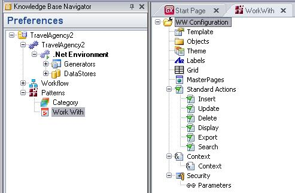
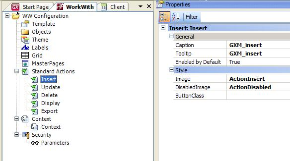
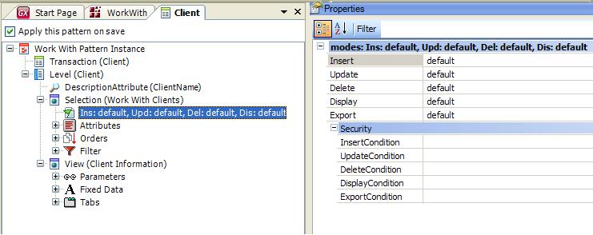

Pattern settings (GeneXus 17 Upgrade 4 or prior)
In Preferences / Patterns, you have the Pattern Settings for each pattern. In the Pattern Settings, you can configure general properties (for all instances).
Then when you apply Patterns for a Transaction object, you will be able to see the configurations in Pattern Settings.
The available patterns are Work With Pattern and Category Pattern.
The Pattern Settings determines some general aspects applied to all objects, such as the Web Master Panel object that will be used in Web Panel objects, Standard Actions for every Work With, General Names for Attributes, etc.

Once you define all the general aspects for the objects in Pattern Settings, if you use the "default" value for the properties in the associated Instance of the Transaction, Patterns will automatically take the value from the Patterns Settings to use in the property.
For example, if you have Insert Standard Action with the value Enabled by Default = True in Pattern Settings, and in the Instance you use the "default" value for the same property, Patterns will assume the True value for the property. If you change the value in Pattern Settings, Patterns will automatically change the value in the Instance. In this case, you don't need to reapply the Pattern to refresh the value.


See also
Setting the Work With Pattern
Setting the Category Pattern